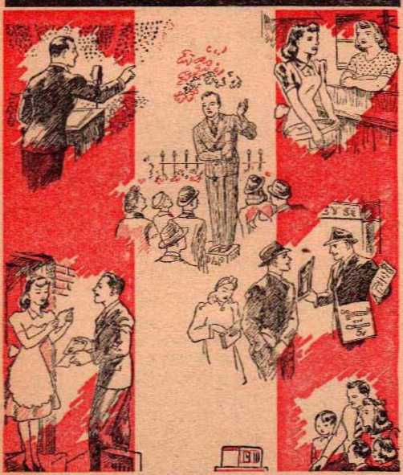

M1MBERTY ON THE HOME FRONT
Freedom Lovers Thrown to the Lions
Behind the front, who is the chief enemy of liberty?
Who are at the very head
in the defense against this enemy?
When the firing ceases and peace comes, why will the fight for liberty have to go on?
Who will establish the four freedoms on earth in the perfect sense?
The answers given herein are startling and sound a warning, , but show the way to enduring
* liberty.
—The Publishers
Copyright, 1943 and published by WATCHTOWER . BIBLE AND TRACT SOCIETY, INC. International Bible Students Association Brooklyn, N. Y., U.S.A.
Branch Officis:
London, Buenoe Arres, Cape Town, Berne, Strathfield, Bombay, Rio de Janeiro, Mexico City, and other cities.
Marte in the United States at America.
WHEN the bell in the tower of the State House at Philadelphia in the British colony of Pennsylvania rang out its hold message that stirring July 4 of 1776, the words inscribed on the hell seemed like a prophecy. Originally east in England, the bell was recast in the “City of Brotherly Love" it were fixed the words: “Proclaim liberty throughout all the land, to all the inhabitants thereof.” The fight for independence that followed was the'birth throes of the great American democracy.
Strangely, the historic words on the Liberty Bell were not taken from some statesman from the cradle of democracy, ancient Greece. Those words were quoted from a still more ancient source, the law of Jehovah God, and were uttered by His witness, Moses, to the nation of Israel. The record is found in that grand book of liberty, the Bible, and reads: “And Jehovah spake unto Moses in Mount Sinai, saying, Speak unto the children of Israel, and say unto them, When ye come into the land which I give you, then shall the land keep a sabbath unto Jehovah. And ye shall hallow the fiftieth year, i and proclaim liberty throughout the land UNTO ALL THE INHABITANTS THEREOF: it shall be a jubilee unto you; and ye shall return every man unto his possession, and ye shall return every man unto his family."—Quoted from Leviticus 25:1,2,10, American Standard Version.
On the facade of the union railroad station, which faces toward the national capitol, at Washington, D. C., there are carved in bold letters the words: “Ye shall know the truth, and the truth shall make you free.” (John 8: 32) This mighty saying is quoted from the words of a prophet greater than Moses, but whom Moses foreshadowed, namely, Jesus Christ, who is “The Faithful and True Witness”. (Revelation 3:14) lie also proclaimed liberty; and after His death of martyrdom one of his apostles wrote to the Christians, saying: “Stand fast therefore in the liberty wherewith Christ hath made us free, and lie not entangled again with the yoke of bondage.”—Galatians 5:1.
The declaration of the freedoms of speech and worship and freedom from want does not date first from A.D. 1941, nor do those freedoms originate with democracy. Out from the distant past come those inspired statements of two of Jehovah’s witnesses, the prophet Moses and the Lord Jesus Christ. Jehovah’s command through Moses to “proclaim liberty” was an announcement of economic freedom, particularly in the “Jubilee Year”. That year of deliverance from bondage and of restoration of lost properties was a “shadow of good things to come” on earth for all men of good-will toward Almighty God and his Righteous Government. (Hebrews 10:1; Colossians 2:16.17) The Jubilee was peculiar to God’s typical Theocratic government over the nation of Israel. The Jubilee with its proclamation of liberty throughout all the land was an event that foreshadowed a free new world under the Everlasting Theocracy, God's kingdom by his Son, Christ Jesus. That Government will fill the earth with boundless prosperity. It will decree and maintain endless freedom from all economic want for all the obedient inhabitants of the earth. For tliis Government Jesus Christ taught his followers to pray to Jehovah God, saying: “Thy kingdom come. Thy will be done in earth, as it is in heaven.”
Had the nation of Israel kept the Theocratic law of Jehovah God through Moses, the inhabitants of Palestine would have enjoyed freedom from want in a “land flowing with milk and honey”, and no aggressions of the enemy would have succeeded in putting them in fear and taking away their rights and liberty. However, the Israelites did not stand fast in their God-given liberty. They turned from obedience to His law and became ensnared with religion as practiced by the surrounding nations. They did not observe the jubilees and proclaim liberty to the poor and oppressed. (Jeremiah 34:8, 15,17) Finally disaster came. The Israelites were overthrown by the most ancient totalitarian power, Babylon. The mighty ‘ Babylon” of modern times is attempting like aggressions throughout the earth and is forcing freedomlovers to stand for their lives in a valiant fight for liberty. In the end right and truth will triumph, soon!
Those cherished rights, freedom of speech and freedom of worship of Almighty God, were declared in the Master’s words: ‘‘The truth shall make you free.” For that reason dictators and totalitarian rulers hate the truth. The dictatorial power of Rome, egged on by the religionists at Jerusalem, crucified the very One who uttered those dynamic words. The truth is given, not to be censored or banned, but to be spoken out to set others free. It is the truth concerning the kingdom of Jehovah God by his Son. To Rome’s governor at Jerusalem Jesus Christ said: “Thou sayest that I am a king. To this end was I born, and for this cause came 1 into the world, that I should bear witness unto the truth. Every one that is of the truth heareth my voice.” “Pilate saith unto him, What is truth!” (John 18:37,38) God’s Word concerning the Kingdom is the truth. “Thy word is truth,” said the Son of God.—John 17:17; Psalm 119:151,160.
The knowledge of this truth makes one free to worship Jehovah God Almighty in spirit and in truth. The truth frees one from religion and its confusing traditions of men. The power of the truth is for liberty. If any people would lie free and enjoy liberty they must learn the truth and hold it fast. The people are entitled to the truth, and no man or body of men has the right and authority to withhold the truth, or to censor it, or to declare it illegal and banned. The truth is the means whereby the people may approach their worthy Creator, the Fountain of life. Man was created with the faculty of worship, and man’s Creator has the first and sole claim to that worship. Men must have the truth in order to worship Him in the right and acceptable way and with enlightened consciences. For this reason the great Creator has sent forth the truth to free the people from the bonds of ignorance, superstition and fear, and that they may walk in the path of light and life.
Where tlie people are by their rulers denied access to the truth, the nation forgets God. The consequences are warned of in the Sacred Book, at Psalm 9:17: “The wicked shall be turned into hell [the state of the dead; the grave], and all the nations that forget God.” Such' national destruction comes at the hands of the God whom they put out of mind and defy. Hence his Word warns: “Now consider this, ye that forget God, lest 1 tear you in pieces, and there lie none to deliver.” (Psalm 50:22) Sure destruction will come in “the battle of that great day of God Almighty”, which involves all nations. By all signs and developments in the world that battle is near. The eternal welfare of the people is in danger. The most vital and pressing need of the people is the truth. Those who deliver it to the distressed people, and who are fighting for liberty to continue to bring it to them, are the greatest benefactors of the people now, by God’s grace.
LIBERTY IMPERILED
It is high time for all lovers of liberty and truth to rally to the defense of these precious things. This is more necessary now than ever before, even with the United Nations confidently predicting victory, and with victory in sight according to their perspective. The danger to the liberty to preach the truth of the only hope of mankind, God’s kingdom, is real and greatly disturbing. It has existed for some time and has increased in seriousness. It has become critical. With millions of men on many fronts battling the totalitarian aggressors against freedom and truth, it is necessary that a vigorous and ceaseless fight for these same things be carried on on the home front. It is altogether in disagreement with itself for men and women to be risking their lives and shedding their blood for such prized things on the fighting front, while behind their backs these things are being whittled away and craftily destroyed by disguised foes of liberty and truth. Not all the fighting is being done with carnal weapons on firing lines within gun range of the enemy. A real fight has been going on incessantly on the home front that, when the millions of patriotic citizens return from the total war to their homes and civilian Life, they may enjoy the right and the liberty to learn and accept the truth and to receive comfort and the hope of life and happiness in a new world of righteousness.
The book entitled “Peace and War” was published by the State Department on January 2, 1943. In it the secretary of state reviewed this fact: That in an address to Congress on January 6, 1941, the nation’s president declared that “at no previous time has American security been so seriously threatened from without as it is today” and that the democratic way of life was being directly assailed “by arms or by secret spreading of poisonous propaganda” in every part of the world; and that the president looked forward to a “world founded upon four essential human freedoms: Freedom of speech and expression; freedom of every person to worship God in his own way; freedom from want—which meant economic understandings that would secure to every nation a healthy peacetime life for its inhabitants; freedom from fear—which meant a world-wide reduction of armaments to such a point that no nation would Iki in a position to commit an act of physical aggression against any neighbor”. (Section XIII) For these four freedoms the men at the front believe they are fighting, and, when they are mustered out, they do not expect to be disappointed in realizing these freedoms in the postwar world. But will they? That depends upon how these freedoms are respected and fought for on the home front and safeguarded against officials who abuse their power and authority in the interests of selfish elements.
Of all freedoms the most vital are that of the worship of God according to the dictates of conscience, and that of speech, to proclaim the truth necessary to the welfare of the people. Let these two freedoms exist even without the freedom from want and from fear of aggression, and the people will still have something to live and fight for. Yet, in the face of the declared aims of the democratic powers, it is in these very fields of worship and of free speech concerning the truth that the people’s liberty is being willfully undermined on the home territory by hypocritical champions of the ‘‘four freedoms”. The sly and steady process has been going on many years, particularly since World War I. Now it has broken forth in overt acts which are unmistakable in their threat to liberty-lovers.
Mark this as to free speech to publish the truth: The dean of the Graduate School of Journalism at Columbia University, New York, made this revelation, when speaking at Haverford College, Pennsylvania, January 12, 1943: “Throughout the thirty years since the School of Journalism at Columbia was established in 1912, the globe has experienced the creeping paralysis of a black plague of governmental propaganda, censorship and control of news until today the plague has spread to and infects the people of every nation on earth.” The dean demanded immediate cessation of all censorship and propaganda at the close of hostilities, and a postwar guarantee of world-wide freedom of the press and communications, in order that a lasting global peace might follow. (New York Times, January 13)
THE VISIBLE ENEMY OF LIBERTY
A deliberate attempt is being made internationally to deprive the suffering peoples of the truth which is for their salvation. In every nation under the sun the truth is hated and its suppression is attempted by those in places of power. Back of the political forces in this aggression against the people’s life-interests stand the religious powers, particularly that politicalreligious organization which has influential agents in all parts of the world, namely, the Roman Catholic Hierarchy. This is not here bluntly said out of malice to the hundreds of millions of the “Catholic population”, but because the bald facts disclose it is the truth. In behalf of those millions of the “Catholic population” and all other populations this truth must be told, now, before it is too late. It is a race against time; the foes of truth and liberty are counting on time. They have waited for this world situation and have their well-laid plans and clear-cut designs for the postwar setup of the nations.
The primary issue before all creation is involved, namely, universal domination. This includes the question, “Who shall rule the earth, God its Creator or the combination of politics, commerce and religion under demon control?” It is highly important that the people be enlightened on this issue and be permitted freely to discuss it and then to take their individual stand with regard to it. Certain powers in control, however, want to decide the issue for all the rest of the people and to keep them in the dark so as to be able to regiment them accordingly. Such powers are wholly out of order in so doing. In fighting against the people’s God-given right to hear and learn the truth, they are fighting against God and his Righteous Government. For this same reason they arc also taking away the liberty of the people to worship God according to the dictates of conscience, and, to be right, that conscience must be enlightened and guided by God’s Word, which is the truth.
The freedom of speech to declare the truth cannot be separated from the freedom to worship God, because it is by obeying the truth and freely speaking it forth to others that man worships his Creator and glorifies him. Man’s eternal life and future happiness are wholly dependent upon Jehovah God and Uis kingdom. Hence man’s relationship to God and man’s service of God to prove worthy of such eternal blessings are of vital importance to him. It is an individual matter for each person, and is not a national affair. Therefore no nation of this world has power or authority to regulate this personal matter. It is a natural right, a divinely ordained right, upon which no government or religious organization should encroach, but which every government dedicated to the four freedoms should preserve for all its citizens, with equal protection for all alike.
The kingdom of God by his Christ is the only government that will establish permanently in the earth the four freedoms in the fullest sense. Hence the Kingdom’s proclamation should be welcomed particularly in all the United Nations, because they are committed to those freedoms. But is it actually so? No; but it is exactly as when the "‘kingdom of heaven” was first announced in the Roman Empire. The Announcer, Jesus, declared to the Roman governor that lie had come into the world to bear witness to the Kingdom truth. To this end Jehovah God anointed Jesus with the spirit or power, and thereby commissioned him to be the King and to announce the Government in which He should rule. Jesus went from city to city and from place to place and also to the homes of the people, preaching, “The kingdom of heaven is at hand.” He sent forth his disciples preaching the same glad tidings. The record is that the common people heard him gladly, but not so their religious rulers and leaders. The Kingdom proclamation roused them up to the most intense opposition and persecution of Jesus and his little band of disciples. Their animosity to the Kingdom message and to Him the King caused them finally to call upon the bloody arm of Roman imperialism. The greatest crime in all history followed, the foulest misdeed in the unlovely career of religion, the dastardly murder of the Son of God. That persecution of an unpopular minority, the truth-speaking Jesus Christ and his disciples, led to the direst consequences of national importance. After that persecution reached its climax in the death of “The King of kings”, the nation of the Jews was destroyed by the dictatorial power of Rome; and those who had cried, ‘His blood be upon us and our offspring,’ were scattered to all nations of the world.
Not less so is it of national importance and of disastrous national consequences now when a nation winks its eye at the persecution of an unpopular minority and does nothing to restigin it, especially when that minority is preaching “The kingdom of heaven is at hand”. It is still more consequential when that nation, by its officers in power, promotes the persecution and forbids the Kingdom proclamation and bans the means for spreading it to the people. No emergency of the nation justifies it in doing so. The preaching of the “gospel of the kingdom” at the end of the world, where we are now, is by the direct command of the Supreme Ruler through his King, Christ Jesus. (Matthew 24:14; Isaiah 61:1) It is expressly commanded that this Kingdom gospel should be “preached in all the world, for a witness unto all nations”. No nation, especially no nation calling itself a “Christian nation”, has the right to interfere with the keeping of that commandment by those giving the witness. To interfere means being anti-Christ. It is fighting against God. It is taking that side of the great issue of universal domination that is against God Almighty. The outcome thereof is certain: national destruction.
The suppressing of the Kingdom news, and hence the outrageous assaults upon the freedom of speech and freedom of worship, starts, not with heathendom, but with so-called “Christendom”. All the nations of “Christendom” are ranged up against it, whether they be Nazi, Fascist or communist nations, or be democratic nations. The United Nations, bound together for a victory over the totalitarian monstrosity, are now also uniting against the message, “The kingdom of heaven is at hand.” Thereby thej7 are taking the same side as their totalitarian opponents, who arc also against the heavenly Kingdom and its proclamation. The artful hand of the deadly enemy of the Kingdom, namely, Satan the Devil, is back of tliis international conspiracy against the truth. Instead of proving a blessing, the United Nations organization, by such a course, proves a reinforced power for hurt to the people. It becomes a huge obstacle in the path of the people that leads to God’s kingdom of life, liberty and the pursuit of happiness. Beware lest it become the instrument of Satan for the oppressing of all the people, keeping them in ignorance of the most vital information, and putting them in the greatest want, the want of the truth that makes them free and leads thejp to God and life eternal.
THE FIGHTERS FOR LIBERTY
The fight for liberty must go on day and night on the home front. The ones who are in the thickest of the fight and who are the very spearhead against totalitarian aggression and for the preservation of liberty are men and women today who are fulfilling the command at Matthew 24:14 and preaching “this gospel of the kingdom” in all the world for a witness unto all nations. Who are they? That minority of international unpopularity, Jehovah’s witnesses. In every land they are fighting for the liberty so dear, the freedom of worship and the freedom of the speech of truth. They know that God’s kingdom will take care of the freedom from want and the freedom from fear; and that is why they preach the Kingdom to the people. In every land they are the principal target of assault by the combined political, commercial, judicial, and religious elements. In every land they arc subjected to persecution and opposition. In every land the prime mover behind it all is “organized religion” under the lead of the Catholic Hierarchy.
Jesus prophesied to his disciples, “Ye shall be • hated of all nations for my name’s sake.” Why now is it that this is fulfilled upon Jehovah’s witnesses, obliging them to stand for their lives and fight for liberty? It is because they accept the Bible teaching that Jehovah is God Almighty, the Supreme Power, and is the only One to whom worship, obeisance, and unquestioning obedience must be given. They acknowledge Christ Jesus as the Son of God and the One whom lie anointed as the King of the Theocratic Government that shall rule the new world in righteousness. Christ Jesus God has exalted to the highest place in the universe next to Himself. Therefore Jehovah’s witnesses acknowledge Jehovah God and Christ Jesus as The Higher Powers, to whom every Christian soul must be subject. Rightly they regard and olwcrve God’s law through Christ as the supreme law. Hence they obey every law of human rulera that is in harmony with righteousness of God’s law; but where man fights against God under cover of human laws, then Jehovah’s witnesses obey God rather than men. They have consecrated their lives and all to Jehovah God, and so His name is called upon them and He has made them his witnesses. As such, they must walk in the footsteps of Jehovah’s Chief Witness, Christ Jesus, as He left them the example. —Isaiah 43:10,12; 1 Peter 2:21.
Christ Jesus declared his Father’s name, and did not meddle in politics of men, but continually preached the kingdom of God as the coming Government of the new world of righteousness and therefore as mankind's sole hope for gaining everlasting life, peace, joy and prosperity. Hence, to copy their Leader and Head, Jehovah’s witnesses must likewise obey God’s commandments and carry out their anointing from him and declare his name and publish his kingdom throughout the earth. That kingdom will destroy Satan the Devil and all his organization visible and invisible. It will deliver all men of good-will from his oppressive rule and will thereby vindicate God’s name and make the earth a clean place for man to worship and glorify Him and to enjoy his manifold goodness forever. Jesus and his apostles went from house to house and city to city telling the people this grand news, and Jehovah’s witnesses today must do likewise. And they do.
The Devil and his demons were back of the opposition against the proclaimed message of the Kingdom in Jesus’ own day, and the Devil used the religious clergy as his spearhead in the attack upon the message. Likewise today, as all the sacred prophecies have foretold, Satan the Devil and his demons use the religious priests and clergymen ns their principal means in opposing the true Christians who now announce the establishment of God’s kingdom and who warn the people of the approaching “day of vengeance of our God" at the battle of Armageddon. The Devil has challenged God's universal domination. He seeks to wrest the universal sovereignty from Jehovah and to set himself up as the god to be worshiped by all creatures that live. Satan is “the god of this world”, and its “prince” or ruler. Hence he is opposed to God's kingdom by Christ, as it will overthrow Satanic rule of the earth and deliver men from his tyranny.
The Scriptures clearly prove that Satan has been ousted from heaven since 1914, and that he now brings great woes upon the people to turn them from God in hopelessness and bitterness and to cause their destruction as faithless ones at Armageddon. Satan has great wrath because he knows that his time is short until that decisive fight which brings the final end to his unrighteous world. To keep mankind in ignorance of the Righteous Government to which he is opposed, Satan persecutes those on earth who are ambassadors and representatives of that Government and who inform the people about it and its wondrous blessings for believing and obedient men. He is out to destroy the Kingdom publishers.—Sec Revelation 12:1-17.
Satan is the father of lies, and hence the father of religion. (John 8:44; Genesis 3:4,5) Always by means of religionists he has fought and harassed Jehovah’s witnesses, from righteous Abel and down to Jesus Christ and his apostles and onward till now. It is therefore not remarkable that ‘‘organized religion” of “Christendom” everywhere decries Jehovah’s eovenant people and uses the strong arm of the political powers to suppress them and prevent their Kingdom preaching. Everywhere political, commercial, judicial and police powers yield to the pressure from “organized religion” and violate their sworn duty’ and their own laws by interfering with Jehovah’s witnesses and imprisoning and punishing them. So doing, they are lending themselves as tools to Satan in his wicked fight against God.
Truthfulness to the facts, and the people’s great need of the hour, compel the statement that in all nations it is primarily the Roman Catholic Hierarchy, with headquarters at Vatican City, that instigates this devilish opposition to Jehovah’s life-giving message through His witnesses. Why? It is because the Roman Catholic Hierarchy of Authority is religious in appearance and pretenses, but is actually political. It is out for world domination. To justify itself in this scheme, it claims that it is God’s will that all souls must be subject to the pope as God’s representative and Christ’s vicegerent, and that this is absolutely essential to the salvation of the people. It audaciously declares, therefore, that it is above all political governments and that it is a supra-national government and hence has the right to dictate to political rulers, judges, police, educators, and capital and labor; and these may do nothing except in the interest of the Roman Catholic Hierarchy.
It declares that such subjection of all political states and all humankind under the great toe of the pope would be the establishment of the kingdom of Christ. To this end it has established Vatican City as a political state. It holds court there with the political envoys, ministers, charges d'affaires, and ambassadors from the nations, including Nazi Germany. Fascist Italy, and demon-worshiping Japan, and has concordats with the totalitarian dictators. It sends its own legates and nuncios to the political states of this world, and also locates its ‘princes of the sect’, the cardinals, in strategic cities, to organize Catholic interests. It strives to get its loyal subjects and ‘children of the sect’ into every organization affecting public life and opinion. It plants cells of its agents therein to block everything that would expose the Hierarchy and interfere with its schemes for world domination. It organizes its religious offspring who servo in governmental, educational, public safety and other departments into Catholic Action groups. This is done that it might use these as pressure groups and might have loyal guards and henchmen at its disposal when and wherever necessary for its policy of aggression. It uses boycott, political threats, and methods of intimidation to bludgeon liberty-lovers who use their Constitutional rights and privileges for enlightening the people and safeguarding democratic institutions.
Everything of human society and statecraft the Hierarchy leavens with its leaven of Catholic infiltration, meddling and propaganda, namely, the state foreign offices, economic boards, diplomatic posts and offices, chairm.'inships of political parties, the judicial bench, control of labor unions, the public schools and colleges, libraries, boards of education, the newspapers, the radio, the motion picture industry, censorship boards, post offices, legislatures, police and detective agencies, and so on. All Catholics in such strategic positions must act first as loyal members of the religious organization and as fully subject to instructions of the Hierarchy and accountable to them. Thereby they knowingly or innocently serve the ends of that system of priestcraft lusting and grasping for power and more power, until the world is theirs. The experiences of Jehovah’s witnesses over • a period of many years in their endeavors to preach the gospel in the face of combined opposition have amply demonstrated the truth of the above to them, and to many other awake people also.
Thus the “Hierarchy of Authority” aims to rule the entire earth in the stead and place of Christ Jesus and his heavenly church, and hence is anti-Christ. It has thereby confused billions of people as to what is the kingdom of Christ, and has brought great reproach upon the name of Christ Jesus and his Righteous Government. It is the most totalitarian and oppressive of any organization ever on earth, and hence it is in sympathy with totalitarian rulers. Being unable to establish its world domination and control of political states by missionary effort, and by spread of its doctrines, and by Jesuitic propaganda, it promotes political parties and confusion, and foments revolution and establishes dictatorships. Then it uses the arm of the dictator to enforce the decrees and objectives of the Hierarchy, and to put down opposition violently, to brush aside democratic and constitutional rule, and to entrench the Hierarchy in power. On this point the political developments since 1918 in Europe are too well known to make further comment necessary.
Why, then, does the Roman Catholic Hierarchy by its clergy and organized Catholic Action in every land oppose and persecute Jehovah’s witnesses! Is it because these are against democracy’s operation? No; but because they proclaim the gospel of God’s kingdom by Christ Jesus and publish the truth of God’s Word by every means of publicity and enable the people to get free from blinding error. They also declare the day of God’s vengeance against all systems of iniquity in this world. This exposes the fraudulent doctrines and practices of the Hierarchy and uncovers its covetous plot for world domination and its sly conspiracy against the freedoms of the people and the democratic and liberal institutions. So the Hierarchy sets its religious-political machinery to work in every land to put the witnesses of the Lord God out of action.
JEHOVAH’S WITNESSES
OPPOSE TOTALITARIAN DICTATORS
In Fascist Italy Jehovah’s witnesses have never been able to establish offices or carry on organized preaching of the Kingdom gospel. In Germany, down till the end of 1932, the witnesses were giving a tremendous testimony to Jehovah’s gracious purposes toward men of good-will. Then the papal nuncio to Germany, who is now himself the chief of Vatican City, maneuvered a child of Catholicism, the Nazi fuehrer, into the chancellorship of Germany. This tool promptly set himself up as dictator and, in keeping with his deal with the Vatican, signed a concordat with the pope, in July, 1933. Immediately thereafter he proceeded to wipe out Jehovah’s witnesses in Germany. He dissolved their meetings and offices. They were even arrested for celebrating the Lord’s supper together. Off with them to the prisons and concentration camps! To the beheading block! Up against a wall before a firing squad! Said the Nazi concordat signer: ‘I will not tolerate that Jehovah’s witnesses should besmirch the Roman Catholic Church.’ And the Roman Catholic clergy of Germany cry, “Bravo!” while six thousand of Jehovah’s witnesses consume away in privations and torments in concentration camps till this day, with all hope of release by Nazidom forbidden, but not without hope of release by God's power in His due time.
So revolting was the Catholic Inquisition against them in Naziland that on Sunday, October 7, 1934, Jehovah’s covenant people assembled in protest meetings throughout the world and sent thousands of special delivery letters and cables to the fuehrer direct, with this identic message: “Hitler Government, Berlin, Germany: Your ill-treatment of Jehovah’s witnesses shocks all good people of earth and dishonors God’s name. Refrain from further persecuting Jehovah’s witnesses; otherwise God will destroy you and your national party, [signed] Jehovah’s witnesses at----.”
At this boldness the Nazi crusaders and inquisitors were surprised, but continued to defy Jehovah God. Their unspeakable oppression of these Christian witnesses of the Most High God continues to this day.
Those witnesses refused to “Heil Hitler!” and confessed only Christ as their Leader. They refused to obey the Nazis where it meant disobedience to God. Theirs was a real fight for liberty, liberty of speech to preach the gospel, liberty of press and assembly, and liberty of worship to God. Christ Jesus declared that after his death his faithful followers would be a ‘light in the world’. By their exemplary fight on the home front to this day those faithful witnesses of Jehovah showed their fellow countrymen the brand of courage and Christianity that could overthrow any dictator and grabber for power. They were lighting the way to the right stand that men of good-will should take toward the disturbers of the peaec of a nation and of the world. If the people of Germany in general had followed the example of Jehovah’s witnesses, though it cost them like punishments, then the acts of the Nazi-Catholic aggressor would never have been possible, because not backed by the masses of the people. However, the people, even if sympathetic, were passive. Also the other nations of “Christendom” looked on but made no protest at such brutal treatment of Jehovah’s witnesses. Why not? Because of the leaven of Catholic influence which permeated such nations and which approved of the Nazi fuehrer’s fulfillment in this way of his concordat with the pope. The “sword of the church” must have free play!
The conspiracy against those who stand for God’s Theocratic Government was not confined to Germany alone. It was in operation in all the rest of the world, including the United States and the British Commonwealth of Nations. The conspirators could put the witnesses off the stage of action only by the crushing of democracy and human liberties in all parts of the earth. The Nazi-Faseist-Hierarchy forces proceeded to do so. All democracy everywhere has come into danger, as pointed out in the booklets entitled “Judge Rutherford Uncovers Fifth Column” and “Conspiracy Against Democracy” and circulated by Jehovah’s witnesses by the millions of copies in 1940. The year 1940 was the four-hundredth anniversary of the founding of the Jesuit Order; it was also a year of presidential election in America. June 3, 1940, the Flag Salute decision against Jehovah’s witnesses was handed down by the United States Supreme Court.
Taking this decision as their pretext, and timing their action with the Nazi blitzkrieg which was crashing its way through Europe and crushing democratic and constitutional government, Catholic Action raised up mob violence against Jehovah’s witnesses, and sworn officers of the law in forty-four states threw these Christians to the lions of violence. This was the climax to years of ‘framing mischief by a law’ to make it impossible for them to preach. Then in Europe the Nazi lightning-war blunted itself against the island fortress of Great Britain. In America the breakdown of law and order, at a time of national elections and with the totalitarian blitz overseas casting its sparks across to the combustible Catholic Action groups in this land, was defeated. Jehovah’s witnesses, in the midst of a hostile nation, fought for their liberties, which ake your liberties also, guaranteed by the Bill of Rights and the constitutions of all the states. Not only did they get the benefit, but you too get the benefit of their fight. They refused to submit to terrorism and mobster law, but endured the persecution and resorted to the constitutional and legal procedures of the land. This proved they are law-abiding, peaceful and not subversive, nor bent upon destroying orderly government or overthrowing democratic processes.
The apostle Paul appealed to Caesar in order to restrain mob-leading religionists who hated his preaching of the gospel and made attempts on his life. So Jehovah’s witnesses took these violations of Christian rights and liberties and these encroachments upon democratic freedoms into the nation’s courts, up to the highest. They valiantly battled for freedoms common to all and against the totalitarian-spirited religious-political enemies of democratic rule. The result was and is a mass of judicial rulings emphasizing the Bill of human rights, and commanding the protection of citizens in the exercise of these rights. The fight is not over. Liberty is not out of danger, as witness the Supreme Court 5-to-4 decision of June 8, 1942, concerning the license-tax ordinances. This decision against unrestricted freedom of the press in preaching the gospel stirred up vigorous protest nation-wide by publishers and editors. As Jehovah’s people throughout the Persian empire in the days of Queen Esther and Prime Minister Mordecai stood for their lives against the decree for the extermination of the Jews, so Jehovah God will uphold his witnesses to stand under the assaults in these perilous times and to fight on and eventually to win. “Haman” and his sons shall hang!
CLOSING IN ON LIBERTY'S LAST STRONGHOLD
Unable to reduce democracy’s stronghold in America by frontal assault, the religious-totalitarian enemies arc hy-passing it and executing a pincers movement and have now practically thrown a ring of steel-strong governmental censorship and suppression about America. Note the process: The Nazi fuehrer's crusade to re-establish the “Holy Roman Empire” throughout the European continent succeeded in stopping there the open and unhindered proclamation of Jehovah’s kingdom by his witnesses. But the work God commands his witnesses to do continues underground by those still at large to do so. In the imperiled lancjs of Sweden and Switzerland, like islands threatenctfR*ith a mountainous tidal wave of Nazi-Fascist domination, the Kingdom witnesses keep pushing on against great obstacles and opposition.
Britain broke away from Vatican domination in the sixteenth century. Ever since the Roman Catholic Hierarchy’s ambition and efforts have been to bind the rebel and lead him back in abject servitude to the Vatican’s fold, and make him serve the Hierarchy’s purpose of world domination. Whether British officials like to be told the fact or not, they are wittingly or unwittingly subserving the Hierarchy’s greedy purpose. Check for yourself: On America’s Independence Day, July 4, 1940, the Canadian Minister of Justice, a Quebec Catholic, who has since died, acted as a servant of the religious Hierarchy and declared Jehovah’s witnesses to be an “illegal organization” throughout the Dominion of Canada. He ordered the seizing of their property. The very next day, France, under Catholic Marshal Petain, deserted the side of Britain and went over to the totalitarian forces. And yet Catholic Quebec insisted that Canada maintain diplomatic relations with Vichy France; and so America’s northern neighbor continued to do so. Then the Hierarchy put the thumbscrews upon the officials of other outposts of the far-flung British Commonwealth of Nations and colonies, and compelled them to go after the servants of Jehovah God and their hated message.
On November 15, 1940, Southern Rhodesia prohibits the importing and distribution of Watchtower Society publications and records. That same month New Zealand bans Jehovah’s witnesses. The following month Northern Rhodesia orders the importation and circulation of Watchtower literature of God’s kingdom stopped under penalty of law. January 16, 1941, Australia declares Jehovah’s covenant people an unlawful organization, also closing their ra?no stations. The next month British West Africa forbids importation of Watchtowe printed matter and later the recorded Bible lectures. The following April British South Africa stops the import of the same Bible literature. Comes June, and Nigeria follows suit. July, and the Netherlands East Indies imposes a like ban. September 8, 1942, by order in council the governor general of the Bahama Islands lays a perpetual ban on Watchtower publications. Two months later, the enemy strikes at the heart of the great Commonwealth of Nations, London, England, and on November 2 a Government Order prohibits the “despatch and receipt by mail or otherwise” of the Watchtower magazines, The Watchtower and Consolation, thereby depriving many thousands of Christians in the British Isles of God’s provisions for bis persecuted people.
In Latin America the Roman Catholic Hierarchy has great power and has l>een diligent to alienate the sympathies of the Central American and South American peoples from non-Catholie United States with the bogeyman of ‘America’s imperialist aims’. Great indignation was recently aroused in “Protestant” organizations, when, in November, 1942, the Catholic bishops of America publicly declared Latin American countries were their exclusive field by ties of religion, and they proposed a deal with the United States government that non-Catholic missionaries be excluded therefrom in return for Roman Catholic support of the war against the Nazi-Fascist powers. Writes a newsman in the December issue of the Catholic Digest: “South America is hastily putting up its immigration bars to prevent the entranee of the hundreds of North American Protestant missionaries who have fled from Japan and the Orient. . . . Seven of the ten South American republics are not permitting any new missionaries to enter their territory. . . . Protestant missionaries always have been considered ‘undesirable’ in all the South American countries.” Additionally, a commentator on this Catholic statement says: “Furthermore, the overzealousness of some Protestant sects, such as Jehovah's witnesses, has caused real embarrassment.” (T----, December 14,
1942) The president of Mexico, during the election campaign that put him in office, was careful to state publicly: “I am a Catholic.” Since his entry into office in 1940 the conflict between the Mexican State and the Roman Catholic sect has practically blown over and the difficulties have disappeared.
By this survey of events since the Nazi-Fascist religious forces went on the march, the all-inclusive pattern of Catholic strategy to gain world dominance becomes clear. Taking advantage of the strict war conditions, the Hierarchy is extending its encroachments on the fundamental liberties most dear to the people, the exercise of free speech, of free press and of free worship according to God’s Word. It has now isolated the United States completely. It will certainly pull tighter the noose as opportunity permits. Not merely Jehovah’s witnesses, but all ‘liberty-lovers are in jeopardy of their rights as men. The Jesuitical Hierarchy will not stop with swallowing up the freedom of Jehovah’s witnesses. She is totalitarian and fanatically believes her destiny from God is to rule the world, including all America. In true Hitlerian style sho will relentlessly move on from this first encroachment upon a hated and despised minority to larger encroachments on all others. Let Americans and liberty-seekers of all lands remind themselves that the liberty of one or of a minority means, in the end, the liberty also of the majority and of all. “Freedom of religion” should also mean “freedom prom religion” when religion turns aggressor against true Christians and free men.
It is not the military necessities of the world that are a “justification” and a “reason” for the banning of the literature and activities of Jehovah’s witnesses in “Christendom”. Despite all declared aims and slogans of the United Nations, this curb against the free spreading of the truth will not stop with the end of the global war. God Almighty’s own Word for it is that the opposition to Bible Christianity will not weaken in the postwar period, but will persist and strengthen. At the last it will bring the nations to the climax, the battle of Armageddon. For this reason, when the postwar builders get their political, commercial, religious structure erected and operating and begin to try “Peace and Safety!” it will not mean a peace with the truth about Jehovah’s Theocratic Government under his Christ. Therefore it will not mean a peace with or from Jehovah G'od. Suddenly complete destruction from God and by Christ will come upon the whole postwar arrangement, and organized religion will go down first. God’s Word says so, at 1 Thessalonians 5:3; Jeremiah 25:29-36.
ON WITH THE FIGHT FOR LIBERTY!
Informed of these coming conditions and trusting implicitly in Jehovah, his witnesses face the future fearlessly. They arc not dismayed, but are, in fact, heartened at the world hatred and op]>osition because it fits in with Jesus’ prediction to his true disciples concerning the “end of the world”, saying: “Then shall they deliver you up to be afflicted, and shall kill you: and ye shall be hated of all nations for my name's sake.” (Matthew 24: 9) At such affliction and persecution Jehovah’s witnesses will not stop witnessing, because they note that after Jesus foretold international hate upon them he also said, both as a prophecy and as a command: “And this gospel of the kingdom shall be preached in all the world for a witness unto all nations; and then shall the end come.” Not the end of Jehovah’s witness, but the inglorious end of the nations, for ever. Though it be in a tribulation such as the nations of the world have never yet seen for stupendousness, the gospel preachers shall survive the world’s end. Only for the sake of Jehovah God’s elect will some flesh be saved through that tribulation, but not the nations that hated His elect.—Matthew 24:14-22.
Let the opposers know now that all their vicious efforts shall prove futile. Christ's words shall not fail, but, in spite of the wicked persecution which “organized religion” brings by instrumentality of the governments of the nations, Jehovah’s witnesses will obey God, and not men. Following Christ, they will move forward in their work till Jehovah God determines that it is finished. This work being of God Almighty, it will not come to nought, but the fighters against God and his ‘‘strange work” will lick the dust. (Acts 5:38,39) Ten years of Nazi dictatorial rule and persecution in Germany have not destroyed Jehovah’s witnesses there. If let loose by some providence of God before Armageddon breaks, those faithful witnesses, in unbroken integrity toward God, will take up again the preaching of the message of freedom by God’s kingdom, for the which they were herded by Nazi crusaders into the concentration camps.
Let no one be deceived. Victory of the United Nations in the total war will not win the victory for the liberty of serving Jehovah God and his kingdom. God Almighty by his spirit or irresistible power will win that victory for his people and will use them in his “strange work” until done. Hence the fight for liberty will continue after the end of this global war. The postwar creature, or “beast”, will ascend out of the bottomless pit, and the “great whore” of “organized religion” will get atop that international organization and will ride it. Combining forces, the “beast” and the “whore” will make war against “The King of kings and Lord of lords”, which means war against those on His side, “the called, and chosen, and faithful.” (Revelation 17:1-5,8-18) Thus the fight for liberty to worship and serve Jehovah God will go on, with greater intensity and courage, and multitudes of persons of good-will are due to see which is the side of truth, righteousness and victory and will take their stand there, fearlessly and immovably. Regardless of what the nations may by man-made laws determine, Goel’s “strange work” eannot be stopped, but to him will go the victory of successfully completing his foreordained work. At Joel 3:9*14 Almighty God challenges the nations to come on and do their worst, before lie does his worst to them.
For their own safety and freedom from destruction, ail persecutors and opposers will do wisely to pause in their present course toward Jehovah's witnesses and to heed the counsel set down at Acts 5: 38, 39: “And now I say unto you, Refrain from these men, and let them alone: for if this counsel or this work be of men, it will come to nought: but if it be of God, ye cannot overthrow it; lest haply ye be found even to fight against God."
God’s Word sets forth a plain warning of what shall inescapably overtake those who presumptuously fight against Him by fighting against the work of His people and trying to overthrow it by devilish means. To such ones Jehovah's witnesses say, to quote the language of Jeremiah (26: 14, 15): “As for me, behold, ! am in your hand: do with me as seemeth good and meet unto you. But know ye for certain, that if ye put me to death, ye shall surely bring innocent blood upon yourselves, and upon this city, and upon the inhabitants thereof: for of a truth the LORD hath sent me unto you, to speak all these words in your ears."
Heed, then, the advice of God’s Word. Do not deny his people the liberty to preach it. Also, in your own behalf, do not feer liberty-haters, but defend and use your own personal liberty to hear, accept and follow the divine Word. So doing, you may enjoy the glorious liberty of the children of God in the righteous NEW WORLD.
TIJE NEW WORLD is good news at a time when the old world is ending amid unheard-of distress of nations. Chapter XI shows that the global war between democratic and totalitarian powers would mark the “time of the end”, and that all totalitarian rule will be smashed at the last war, Armageddon. This is but one of the thrills of this astounding book.
Why the “four freedoms” have not yet been established by human power, and never will be, and how they will be brought to earth in their perfect sense by a Higher Power, is clearly revealed in THE NEW WORLD. The baffling mystery of why God Almighty has permitted wickedness and human suffering is solved by a lucid explanation of the prophetic drama of Job according to its marvelous fulfillment to date. The rewards of those who bear up with integrity under the test bring the book to a glorious climax for those who long to see and enjoy life on earth in the new world.
THE NEW WORLD, hound In peach cloth, and with embossed planetary design, gives you 384 pages of true-life story, color Illustrations, subject index and Scripture-text Index. On a mere contribution of 25c it will be mailed to any address, postage prepaid. Remit to
WATCHTOWER, 117 Adams St., Brooklyn, N.Y.